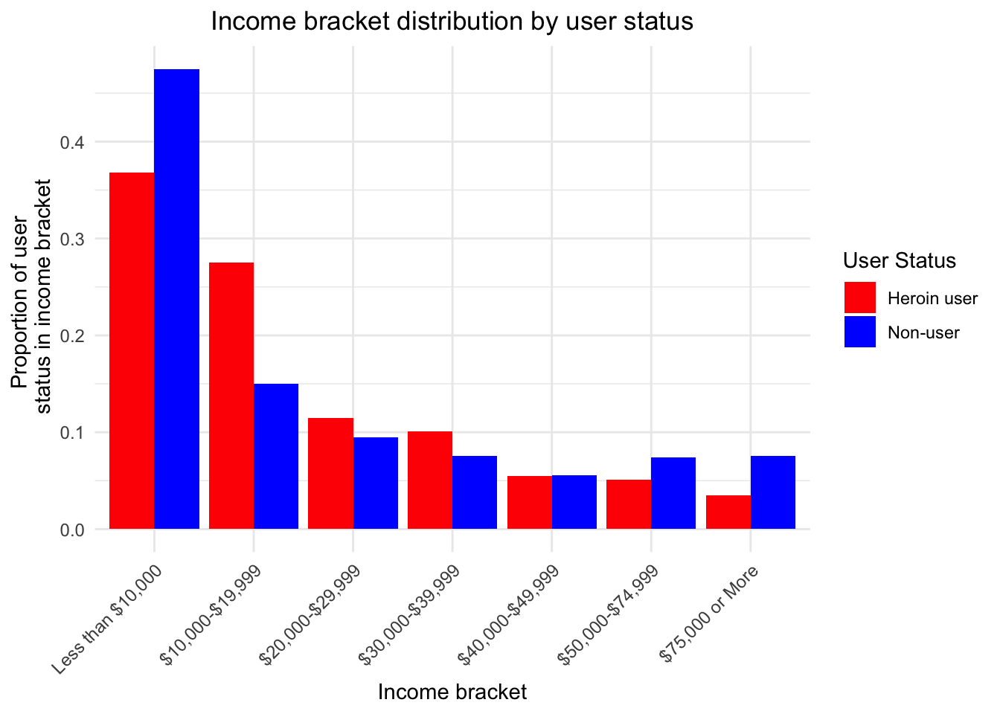
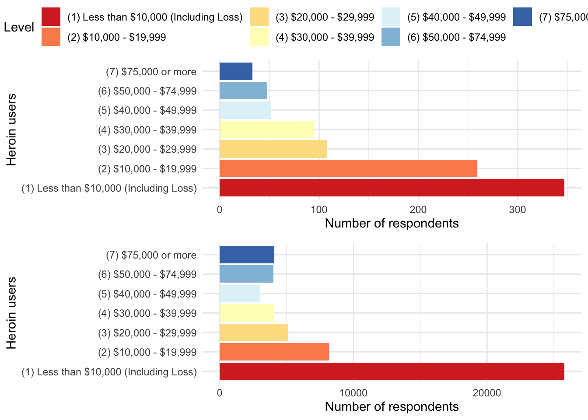

In this analysis, we1 were interested in exploring how income changes with heroin use. We used the National Survey on Drug Use and Health 2 as a source for data on self-reported heroin use and self-reported income bracket3. Because these data are self-reported, any inference should be treated with caution.
The data are from the National Survey on Drug Use and Health, which is conducted annually by the Substance Abuse and Mental Health Services Administration (SAMHSA), an agency in the U.S. Department of Health and Human Services (HHS). More information about this survey can be found at ICPSR’s data archive page.
# Libraries
library(tidyverse)
library(forcats)
library(gridExtra)
library(ggpubr)
# Data
load("data/36361-0001-Data.rda") # available in the github repo
data <- da36361.0001
remove(da36361.0001)We excluded anyone that did not respond to the income or heroin-use questions.
#Defining user status
combined_data <- data %>%
filter(!is.na(HEREVER)) %>% # remove NAs
mutate(user = if_else(HEREVER == "(1) Yes", 1, 0),
non_user = if_else(HEREVER == "(2) No", 'Non-user', 'Heroin user')) %>% # create a new boolean value for use
group_by(IRPINC3, user, non_user) %>% # first take the sum in each cell
select(user, non_user, IRPINC3) %>%
summarize(count = n())## `summarise()` regrouping output by 'IRPINC3', 'user' (override with `.groups` argument)summary_by_income <- combined_data %>%
ungroup() %>%
group_by(user, non_user) %>% # then regroup to take the mean across income
mutate(p = count / sum(count))We first classified our participants by their response to the question “Have you ever used heroin?” A participant who responded (1) Yes is categorized as a heroin_user and a participant who responded (2) No is categorized as a non_user. We then found the percentage of total heroin users and non-users in each income bracket.
#Side-by-Side Bar Plot
ggplot(summary_by_income)+
labs(title = "Income bracket distribution by user status",
x="Income bracket",
y= "Proportion of user \n status in income bracket")+
geom_bar(aes(x=IRPINC3,
fill=as.factor(non_user),
y=p),
position="dodge",
stat="identity")+
scale_fill_manual(values=rep(c("red","blue")),
name="User Status")+
scale_x_discrete(labels=c("Less than $10,000", "$10,000-$19,999","$20,000-$29,999","$30,000-$39,999", "$40,000-$49,999", "$50,000-$74,999","$75,000 or More"))+
theme_minimal()+
theme(plot.title = element_text(hjust = 0.5))+
theme(axis.text.x = element_text(angle = 45, hjust = 1, vjust = 1, size = 9),
axis.text.y=element_text(size = 9))
#Stacked bar plot
ggplot(summary_by_income, aes(x=as.factor(non_user),fill = IRPINC3, y = p))+
geom_bar(position="fill", stat="identity")+
scale_fill_brewer(palette="RdYlBu",direction=1,
name="Income Bracket")+
labs(x="",y="Proportion per income bracket \n by user status",
title="Proportion of Family income bracket by User Status")+
scale_x_discrete(labels=c("Non User","Heroin User"))+
theme_minimal()#Bar Chart
bar_chart_heroin_user <- ggplot(combined_data %>% filter(non_user == 'Heroin user'))+
geom_bar(aes(x=IRPINC3,fill=IRPINC3, y = count), stat = 'identity')+
coord_flip()+
labs(x='Heroin users', y='Number of respondents')+
scale_fill_brewer(palette="RdYlBu",direction=1,
name="Income Level")+
theme_minimal()
bar_chart_non_user <- ggplot(combined_data %>% filter(non_user == 'Non-user'))+
geom_bar(aes(x=IRPINC3,fill=IRPINC3, y = count), stat = 'identity')+
coord_flip()+
labs(x='Heroin users', y='Number of respondents')+
scale_fill_brewer(palette="RdYlBu",direction=1,
name="Income Level")+
theme_minimal()
ggarrange(bar_chart_heroin_user, bar_chart_non_user, nrow=2, common.legend = T) 
Note: There is a dramatic difference in scale on the x-axis because there are fewer heroin users and than non-users. We diplay absolute number to display relative relationship.
The proportion of respondents who reported that they used heroin (in the past or present) continuously decreased as income increased. In contrast, most people who had never used heroin were not in the middle group of income brackets -they were more likely to be in the higher- or lower-income brackets.
From our graphs, we can see that survey respondents who reported that they have never used heroin were more likely to reside in at the two extremes of our income distribution - our lowest and two highest income brackets - than were survey respondents who reported that they have used heroin. Stated differently, respondents who reported that they have used heroin were more likely to reside in our middle four income brackets than their counterparts who had never used heroin.
This page is a revision of a lab originally completed with Evie Boland, Joshua Gatcke, and Miguel Ojeda.↩
A brief summary of the survey and its methodology is available here and the survey’s raw data for each of the last \(40\) years are available here.↩
We use the variable HEREVER to determine self-reported heroin use and the variable IRPINC3 determine income bracket. HEREVER is either “Yes”“,”No“, or”NA"", and IRPINC3 is split into seven brackets: less than $10,000, every $10,000 up to $50,000, from $50,000 to $75,000, and more than $75,000. A detailed description of all variables is available here↩